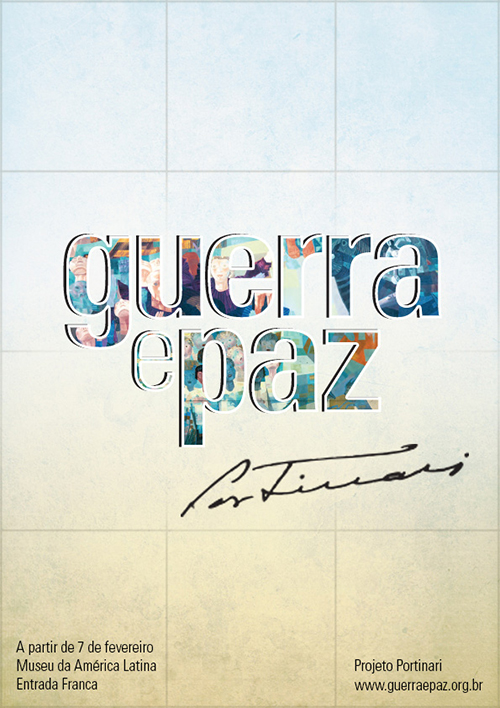
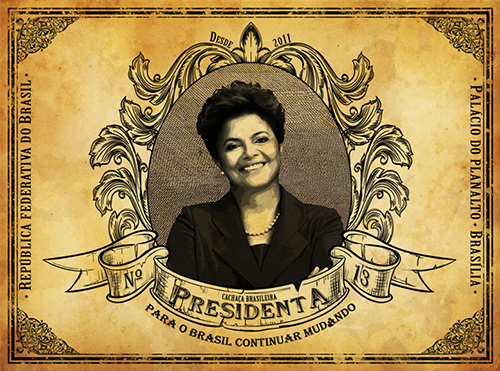
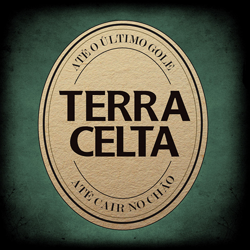
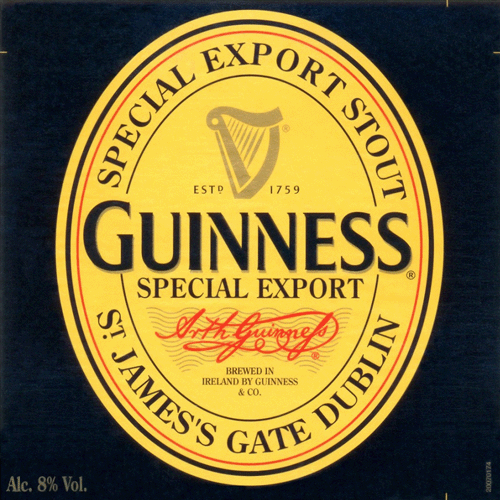
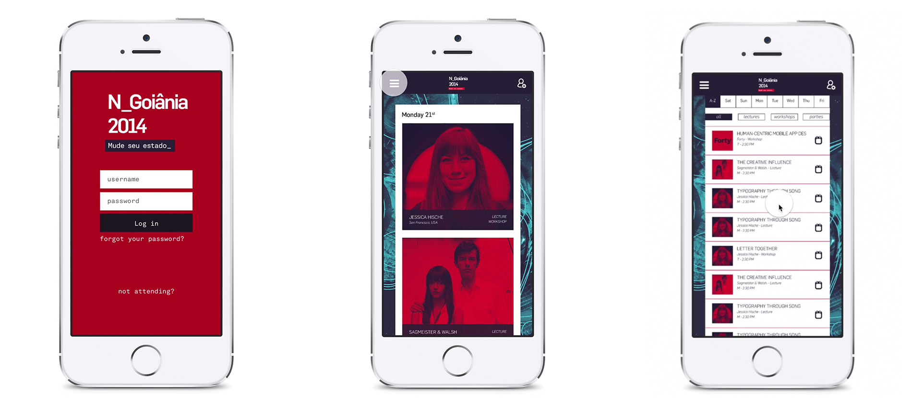

Daniela C. Barbosa
Trabalhos de Faculdade
Iniciei o curso de Design Gráfico na UFG em 2010, mas nunca me limitei apenas a faculdade e sempre busquei aprender com cursos profissionalizantes em outras instituições como o SENAC, por exemplo. Foi assim que pude aprender mais sobre o pacote Adobe além de HTML e CSS.
No segundo semestre de 2013 tive a oportunidade de participar de um intercâmbio nos EUA através do Ciência Sem Fronteiras. Um ano estudando na ASU e morando em um país completamente diferente me fez amadurecer muito tanto como pessoa quanto como profissional.
Tanto na UFG quanto na ASU tive a oportunidade de trabalhar com várias vertentes do design passando por impressos, identidade visual, web design, fotografia e vídeo.
UFG
Cartaz para uma exposição fictícia de Cândido Portinari para a matéria História da Arte Brasileira:
Rótulo de uma cachaça fictícia chamada “Presidenta”, baseada nas xilogravuras brasileiras do século XVIII, muito utilizadas em rótulos de produtos naquela época.
Proposta de Capa de CD para banda Terra Celta que tem características da música irlandesa, por isso a inspiração veio do rótulo da Cerveja Guinness da Irlanda:

ASU
Na matéria de Motion Graphics o primeiro projeto foi criar um video bumper para ser usado no restante do semestre em todos os outros projetos. Como esse video seria mostrado sempre ao começo e final dos demais videos, minha ideia era criar um bumper como se o conteúdo em questão tivesse saindo de dentro da TV. Foi escolhida um TV analógica para poder explorar suas características como o efeito de interferência e tela de tubo:
O projeto final dessa matéria foi criar um video de Opening Credits com no mínimo dois minutos. O filme escolhido foi Kill Bill 2, primeiro por gostar muito dele, segundo por ter uma identidade marcante tanto na suas cores quanto na tipografia e trilha sonora; e terceiro que o video seria como uma reprise de alguns elementos importantes do primeiro filme:
Para a Matéria de Interaction Design, o projeto final deveria ser um aplicativo para dispositivos móveis. Na época eu estava envolvida com o N_Goiânia 2014, e fiz uma proposta de aplicativo para o evento. Como não possuo conhecimentos de programação, o aplicativo não chegou a ser produzido, mas para a produção dos protótipos eu escolhi usar o Quartz Composer juntamente com o Origami, por serem ferramentas utilizadas por grandes empresas da área como Facebook e Google:
